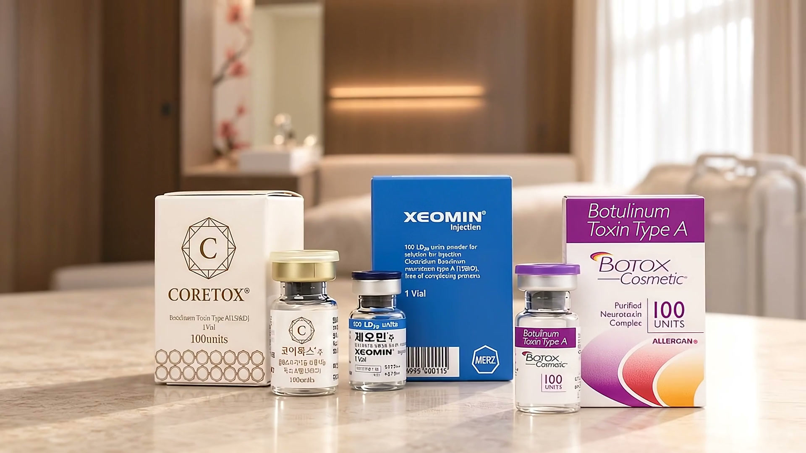
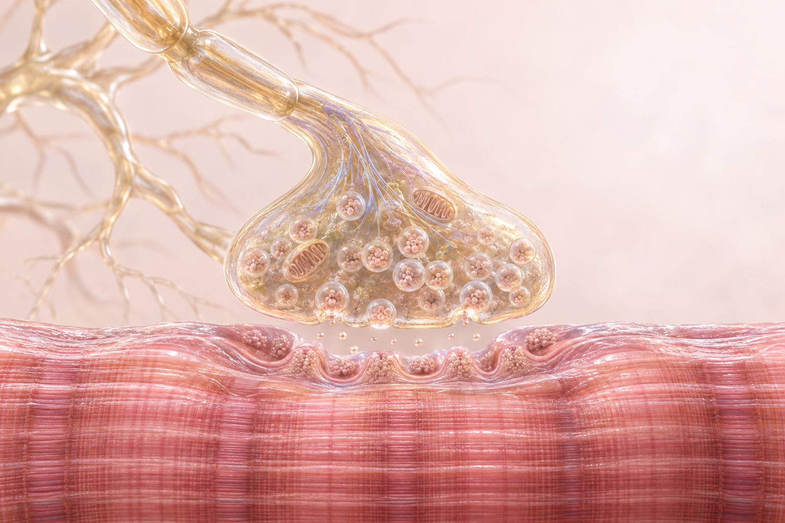
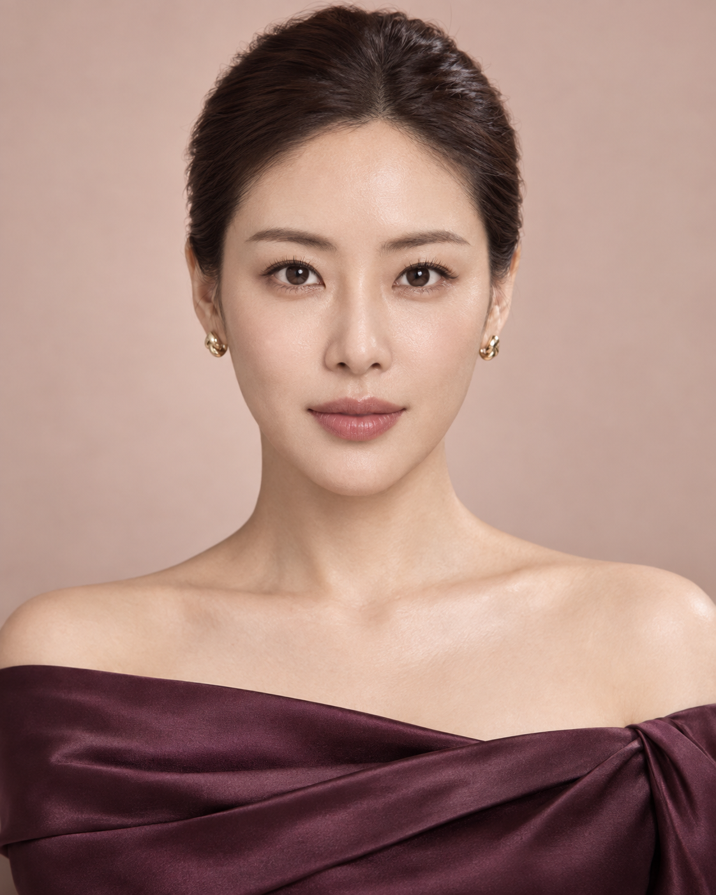
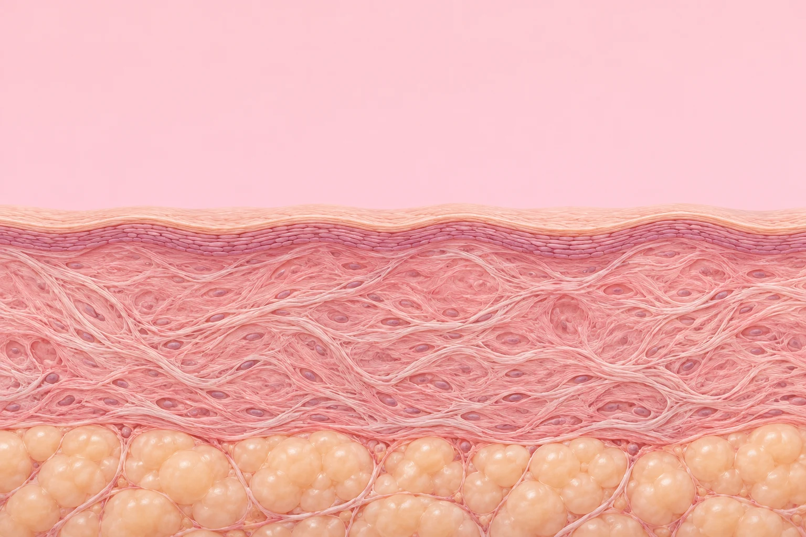
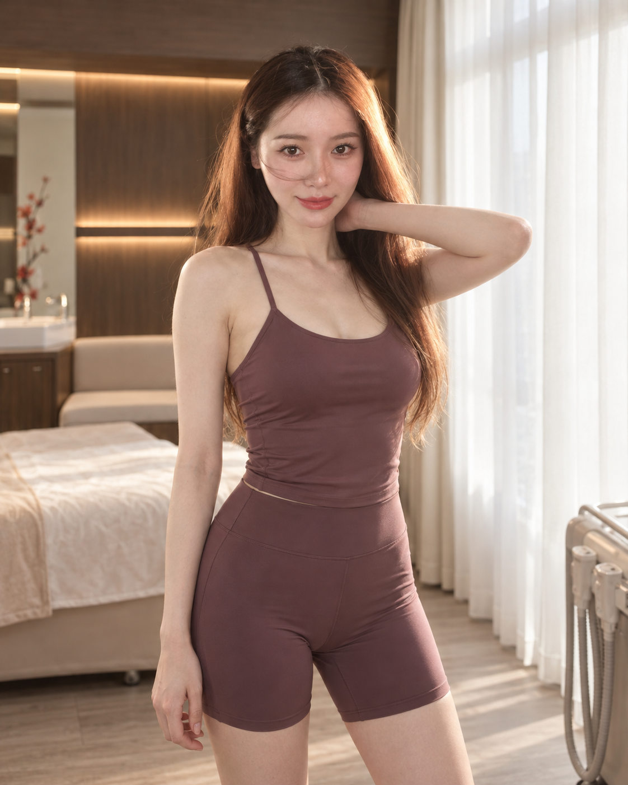
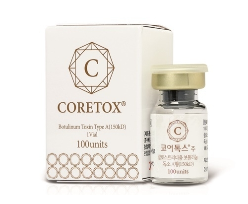
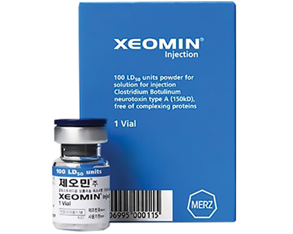
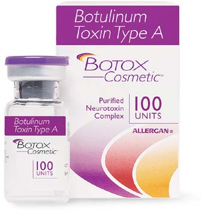

표정 주름과 턱 근육의 발달, 턱끝의 움직임을 나누어 살펴봅니다. 관심 부위를 선택하면 해당 범위를 자세히 볼 수 있습니다.

Less tension.
More you.
More you.
보톡스는 어떤 원리로
근육의 움직임에 작용할까요?
보툴리눔 톡신은 신경에서 근육으로 전달되는 신호에 작용해 근육의 수축을 일시적으로 줄이는 데 사용하는 약물입니다.
얼굴의 표정과 근육의 발달 정도를 함께 살펴, 필요한 부위와 시술 계획을 정합니다.

신경 말단신호 전달근육 섬유움직임을 전달하는 신호
신경 말단에서 전달되는 신호가 근육의 수축에 관여합니다.
신호 전달에 작용
보툴리눔 톡신은 신경 말단에서 신호를 전달하는 물질의 방출에 작용합니다.
일시적인 근육 수축 감소
시술 부위의 움직임과 긴장이 달라질 수 있습니다. 개인별 반응과 경과를 확인합니다.
작용 원리를 단순화한 개념도입니다. 실제 크기·주입 위치·효과의 시간 경과를 나타내지 않습니다.
같은 보톡스라도,
살피는 부위는 다릅니다.
관심 있는 부위를 선택해보세요.
움직임과 피부 상태에 맞춰 접근합니다.

이마 · 미간 · 눈가 · 사각턱 · 턱끝스킨보톡스,
피부에 맞춘 다른 접근
근육의 움직임과 피부의 고민을
구분해 살펴봅니다.

피부 표면피부의 얕은 층피부의 얕은 층에 접근하는 방식을 표현한 모식도입니다. 실제 깊이·주입 지점·범위를 안내하는 그림은 아닙니다.
Skin.
In detail.
In detail.
피부결과 잔주름을
함께 살펴봅니다.
스킨보톡스는 피부의 얕은 층을 대상으로 접근하는 시술을 말합니다. 피부결과 잔주름 등 상담하려는 고민에 따라 범위와 방법을 정합니다.
- 근육 중심
- 특정 근육의 움직임과 발달 상태
- 피부 중심
- 피부 상태와 잔주름·피부결 고민
피부 두께와 표정, 이전 시술 이력 등을 함께 확인하며 개인에 따라 적합성이 다릅니다.
Body
balance.
balance.
바디라인도,
근육의 상태부터
승모근이나 종아리처럼 근육의 발달이 영향을 주는 부위는 피부·지방·근육의 상태를 구분해 살펴봅니다.
바디보톡스는 지방을 분해하는 시술이 아닙니다. 원하는 라인과 일상에서의 움직임을 함께 고려해 계획합니다.
바디보톡스 자세히 보기
제품을 고를 때도,
나를 기준으로
이름만으로 정하기보다
제품의 특성과 시술 이력을 함께 확인합니다.
국산 보툴리눔 톡신
시술 목적과 이력을 고려해
적합한 제품을 상담합니다.

코어톡스
제품의 성분·특성과
이전 시술 반응을 확인합니다.

제오민
제품별 특성을 살펴
개인에게 맞는 계획을 세웁니다.

엘러간 보톡스
시술 목적과 적용 부위를
확인하고 안내합니다.
제품별 단위와 용량은 서로 같은 기준으로 환산하지 않습니다. 사용 제품과 시술 계획은 진료 시 안내합니다.
상담부터 경과까지,
디테일을 살피는 진료
표정과 상태 확인
관심 부위, 평소 표정과 근육 상태, 이전 시술·복용 약·알레르기 이력을 확인합니다.
개인별 계획 안내
제품과 부위, 기대할 수 있는 변화 및 주의사항을 설명하고 적합한 계획을 세웁니다.
경과와 관리 확인
시술 후 반응을 살피고 관리 방법을 안내합니다. 변화와 다음 시술 간격을 상담합니다.
보톡스,
자주 묻는 질문
보톡스와 필러는 어떤 차이가 있나요?
보톡스는 근육에 전달되는 신호에 작용하고, 필러는 필요한 부위의 볼륨과 형태를 보완합니다. 같은 부위의 고민이라도 원인에 따라 적합한 접근이 달라집니다.
주름 보톡스와 사각턱 보톡스는 무엇이 다른가요?
주름 보톡스는 표정에 따라 움직이는 근육을, 사각턱 보톡스는 주로 저작근의 발달 상태를 살펴봅니다. 얼굴선에는 뼈·지방·피부 상태도 영향을 주므로 상담에서 원인을 구분합니다.
스킨보톡스는 일반 보톡스와 어떻게 다른가요?
일반 보톡스가 특정 근육의 움직임을 중심으로 접근한다면, 스킨보톡스는 피부의 얕은 층을 대상으로 피부결과 잔주름 등의 고민을 살펴봅니다. 적용 범위와 방법은 피부 상태에 따라 정합니다.
어떤 보톡스 제품을 선택하면 좋을까요?
시술 목적, 이전 시술과 반응, 제품의 특성을 함께 고려합니다. 제품의 단위와 용량을 서로 동일한 기준으로 바꾸어 비교하지 않으며, 진료 시 적합한 제품을 안내합니다.
효과는 언제 나타나고 얼마나 유지되나요?
주름·사각턱·바디 등 시술 목적과 부위에 따라 변화가 나타나는 시점과 유지 기간이 다릅니다. 바로 결과를 단정하기보다 안내받은 시점에 움직임과 경과를 확인합니다.
다음 시술 간격은 어떻게 정하나요?
이전 시술 날짜와 제품, 변화 정도, 현재 근육·피부 상태를 확인한 뒤 정합니다. 다른 병원에서 받은 시술을 포함해 최근 시술 이력을 알려주세요.
시술 후에는 무엇을 확인해야 하나요?
시술 부위에 일시적인 붉어짐·부기·멍·불편감이 생길 수 있습니다. 안내받은 관리 방법을 따르고 증상이 지속되거나 예상과 다른 변화가 있으면 병원에 문의하세요. 호흡이나 삼킴에 이상이 생기면 즉시 진료를 받으세요.
홍대·합정 보톡스 상담은 어떻게 예약하나요?
아래 카카오톡이나 전화로 상담할 수 있습니다. 관심 부위와 이전 시술 이력을 알려주시면 진료 상담에 도움이 됩니다. 뷰티블라썸의원은 합정역 3번 출구 앞에 있습니다.


나에게 맞는 보톡스,
상담에서 시작하세요.
관심 있는 부위와 원하는 변화를
함께 살펴봅니다.
시술 정보 참고 자료
보툴리눔 톡신의 일반적 작용 원리는 MedlinePlus 의약품 정보를 참고했습니다. 해외 특정 제품의 허가 범위를 국내 모든 제품·부위에 동일하게 적용하지 않습니다.